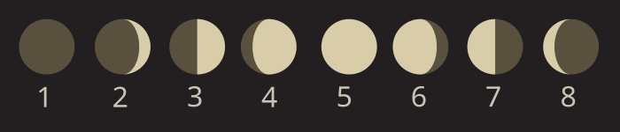

A lunar calendar is a dating system whose months track the phases of the Moon — that is, each month corresponds to one complete cycle of the Moon's phases, known as a synodic month or lunation. Lunar calendars are among the oldest timekeeping systems in human history, predating solar and lunisolar calendars.

Horst Frank / Gregors, CC BY-SA 3.0
{kind=link}
The Synodic Month
The fundamental unit of a lunar calendar is the synodic month (from Greek synodos, "meeting" or "conjunction"), defined as the time between successive new moons as seen from Earth. Its mean duration is 29.530588 days (29 days, 12 hours, 44 minutes, 3 seconds). The synodic month is longer than the Moon's true orbital period (the sidereal month, approximately 27.3 days) because Earth is simultaneously orbiting the Sun: after the Moon completes one orbit, it must travel an extra 2.2 days to reach the same Sun–Earth–Moon geometry.
Because 12 synodic months sum to only approximately 354.37 days — roughly 10.88 days shorter than a solar (tropical) year of 365.24 days — a purely lunar year drifts through all seasons over approximately 33 years.
Pure Lunar and Lunisolar Calendars
Pure lunar calendars make no attempt to align months with the solar year. Their months drift backward through the seasons at approximately 11 days per year, completing a full seasonal regression in 33–34 years. The Islamic (Hijri) calendar is the primary modern example: it has 12 months totalling 354 or 355 days per year, with month beginnings determined traditionally by observation of the first visible new moon crescent at sunset. The calendar's epoch is 622 CE, marking the Hijrah. Because it is purely lunar, Ramadan and other Islamic observances cycle through all seasons over approximately 33 years.
Lunisolar calendars add intercalary (leap) months periodically to keep months broadly aligned with the seasons. The Hebrew, Chinese, Vietnamese, Hindu, Korean, and Thai calendars are all lunisolar. The Hebrew calendar employs the Metonic cycle (see below): a 19-year structure containing 12 years of 12 months and 7 years of 13 months, so that Passover always falls in spring. The Chinese lunisolar calendar governs intercalation through the system of 24 solar terms, inserting a leap month every 2–3 years.
Intercalation
Intercalation is the insertion of extra days or months to keep a calendar synchronised with an astronomical cycle. For lunisolar calendars, the most common approach adds a 13th month every 2–3 years. Without intercalation, a lunar year falls approximately 10.88 days short of a solar year, and festivals tied to agricultural seasons would drift unacceptably. The Babylonians were probably the first to systematise intercalation: before approximately 380 BCE, decisions were made ad hoc by royal astrologers; after that date, fixed rules were established.
The Metonic Cycle
The Metonic cycle is the observation that 235 synodic months equal 19 solar years to within approximately 2 hours. After 19 years, the Moon's phases recur on the same calendar dates, making the Metonic period a powerful tool for intercalation. The cycle is named after Meton of Athens (5th century BCE), who recognised it and counted 6,940 days in the period. The underlying arithmetic had already been used by Babylonian astronomers from the late 6th century BCE. The Metonic cycle underlies the Hebrew calendar and historically governed Easter computation in Christian liturgy; it is off by approximately 2 hours, 5 minutes, 16 seconds per 19-year cycle — negligible for most practical purposes.
Historical Importance
Lunar calendars are the earliest known systematic timekeeping devices. Evidence for prehistoric lunar tallies includes the Abri Blanchard bone (France, approximately 28,000 years ago), a bone shard with a pattern of pits interpreted as a record of Moon phase cycles. A Mesolithic pit alignment at Aberdeenshire, Scotland (approximately 8,000 BCE) — a 50-metre arc of pits shaped to depict waxing, waning, crescent, gibbous, and full moon phases — has been described as the world's oldest known formal lunar calendar monument. The Sumero-Babylonian calendar, the first historically documented lunar calendar, began each month on the first day of the new crescent Moon's visibility.
Solar calendars, such as the Gregorian calendar now used as the international civil standard, abandon lunar months entirely and keep months as administrative units of fixed length in order to track the seasons consistently.